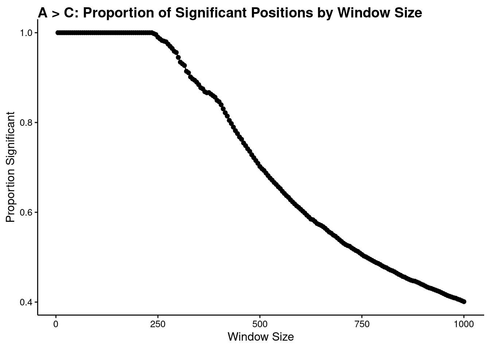

Last updated: 2026-09-25
Checks: 7 0
Knit directory: LSCI_pipeline/
This reproducible R Markdown analysis was created with workflowr (version 1.7.2). The Checks tab describes the reproducibility checks that were applied when the results were created. The Past versions tab lists the development history.
Great! Since the R Markdown file has been committed to the Git repository, you know the exact version of the code that produced these results.
Great job! The global environment was empty. Objects defined in the global environment can affect the analysis in your R Markdown file in unknown ways. For reproduciblity it’s best to always run the code in an empty environment.
The command set.seed(20240916) was run prior to running
the code in the R Markdown file. Setting a seed ensures that any results
that rely on randomness, e.g. subsampling or permutations, are
reproducible.
Great job! Recording the operating system, R version, and package versions is critical for reproducibility.
Nice! There were no cached chunks for this analysis, so you can be confident that you successfully produced the results during this run.
Great job! Using relative paths to the files within your workflowr project makes it easier to run your code on other machines.
Great! You are using Git for version control. Tracking code development and connecting the code version to the results is critical for reproducibility.
The results in this page were generated with repository version d19823c. See the Past versions tab to see a history of the changes made to the R Markdown and HTML files.
Note that you need to be careful to ensure that all relevant files for
the analysis have been committed to Git prior to generating the results
(you can use wflow_publish or
wflow_git_commit). workflowr only checks the R Markdown
file, but you know if there are other scripts or data files that it
depends on. Below is the status of the Git repository when the results
were generated:
Ignored files:
Ignored: .Rhistory
Ignored: .Rproj.user/
Ignored: data/1kgp/
Ignored: data/hgdp/
Ignored: data/reference/
Ignored: output/3mer_counts/
Ignored: output/controls/
Ignored: output/figs/
Ignored: output/manuscript_figures/
Ignored: output/single_pos/
Ignored: output/single_pos_cc/
Ignored: output/single_pos_pp/
Ignored: output/singletons/
Ignored: output/slurm/
Ignored: output/tables/
Ignored: output/three_pos/
Ignored: output/two_pos/
Ignored: output/two_pos_cc/
Ignored: output/vcftools/
Ignored: scratch/
Unstaged changes:
Modified: README.md
Modified: analysis/cutoff_evaluation.Rmd
Modified: analysis/single_position_results.Rmd
Modified: analysis/statistic_calibration.Rmd
Modified: analysis/three_pos_results.Rmd
Modified: analysis/two_position_results.Rmd
Modified: code/Figures/load_data.R
Modified: code/Figures/single_position.R
Modified: code/annotate_cpg.py
Note that any generated files, e.g. HTML, png, CSS, etc., are not included in this status report because it is ok for generated content to have uncommitted changes.
These are the previous versions of the repository in which changes were
made to the R Markdown (analysis/sliding_window.Rmd) and
HTML (docs/sliding_window.html) files. If you’ve configured
a remote Git repository (see ?wflow_git_remote), click on
the hyperlinks in the table below to view the files as they were in that
past version.
| File | Version | Author | Date | Message |
|---|---|---|---|---|
| Rmd | d19823c | theandyb | 2026-09-25 | wflow_publish("analysis/sliding_window.Rmd") |
library(tidyverse)── Attaching core tidyverse packages ──────────────────────── tidyverse 2.0.0 ──
✔ dplyr 1.2.1 ✔ readr 2.2.0
✔ forcats 1.0.1 ✔ stringr 1.6.0
✔ ggplot2 4.0.3 ✔ tibble 3.3.1
✔ lubridate 1.9.5 ✔ tidyr 1.3.2
✔ purrr 1.2.2
── Conflicts ────────────────────────────────────────── tidyverse_conflicts() ──
✖ dplyr::filter() masks stats::filter()
✖ dplyr::lag() masks stats::lag()
ℹ Use the conflicted package (<http://conflicted.r-lib.org/>) to force all conflicts to become errorslibrary(ggpubfigs) # functions for color blind friendly palettes
Attaching package: 'ggpubfigs'
The following object is masked from 'package:ggplot2':
theme_greylibrary(reactable) # table output for html
library(knitr) # PDF table output
library(conflicted)
library(kableExtra)
conflict_prefer("filter", "dplyr")[conflicted] Will prefer dplyr::filter over any other package.conflict_prefer("lag", "dplyr")[conflicted] Will prefer dplyr::lag over any other package.conflict_prefer("theme_grey", "ggpubfigs")[conflicted] Will prefer ggpubfigs::theme_grey over any other package.cb_palette <- c("#E69F00", "#56B4E9", "#009E73", "#F0E442",
"#0072B2", "#D55E00", "#CC79A7", "#000000",
"#490092", "#999999", "#59260B")base_dir = "output"
single_pos_dir = paste0(base_dir, "/single_pos")
control_control <- paste0(base_dir, "/single_pos_cc")theme_publication <- function(base_size = 12, base_family = "sans") {
theme_bw(base_size = base_size, base_family = base_family) %+replace%
theme(
# Remove background elements
panel.border = element_blank(),
panel.grid.major = element_blank(),
panel.grid.minor = element_blank(),
# Style the axes
axis.line = element_line(color = "black", linewidth = 0.5),
axis.ticks = element_line(color = "black", linewidth = 0.5),
# Refine text and labels
strip.background = element_rect(fill = "white", color = "white"),
strip.text = element_text(face = "bold", size = rel(1)),
plot.title = element_text(face = "bold", size = rel(1.2), hjust = 0),
axis.title = element_text(size = rel(1.0)),
axis.text = element_text(size = rel(0.8)),
# Legend positioning
legend.key = element_blank(),
legend.direction = "horizontal",
legend.position = "bottom"
)
}
cb_palette <- c("#E69F00", "#56B4E9", "#009E73", "#F0E442",
"#0072B2", "#D55E00", "#CC79A7", "#000000")Load position-level results:
subtypes <- c("AT_CG", "AT_GC", "AT_TA",
"GC_TA", "GC_CG", "GC_AT",
"cpg_GC_TA", "cpg_GC_CG", "cpg_GC_AT")
get_pos_results <- function(res_dir, pop, subtype){
f_name <- paste0(res_dir, "/", pop, "/", subtype, ".csv")
df <- read_csv(f_name, show_col_types = FALSE) %>%
rowwise() %>%
mutate(re = dev / (2 * (singletons+controls)))
return(df)
}
get_pos_cc <- function(control_control, pop, subtype){
f_name <- paste0(control_control, "/", pop, "/", subtype, "_v2.csv")
df <- read_csv(f_name, show_col_types = FALSE) %>%
mutate(re = dev / (2 * (singletons + controls) ))
return(df)
}
get_pos_results_all <- function(res_dir, pop, subtypes){
results <- vector(mode = "list", length = length(subtypes))
for(i in 1:length(subtypes)){
results[[i]] <- get_pos_results(res_dir, pop, subtypes[[i]])
results[[i]]$subtype <- subtypes[[i]]
}
return(bind_rows(results))
}
subtype_print_names <- function(st){
if(str_starts(st, "AT")){
return(paste0("A → ", str_sub(st, 4, 4)))
} else if(str_starts(st, "GC")){
return(paste0("C → ", str_sub(st, 5, 5)))
} else if(str_starts(st, "all")){
return(paste0("C* → ", str_sub(st, 9, 9)))
} else{
return(paste0("CpG → ", str_sub(st, 9, 9), "pG"))
}
}Load position-level residuals:
get_pos_resid <- function(res_dir, pop, subtype, rp){
f_name <- paste0(res_dir, "/resid/", pop, "/", subtype, "_rp_", rp, ".csv")
df <- read_csv(f_name, show_col_types = FALSE)
df$rp <- rp
n_tot <- sum(df$n)
df$re_res <- (df$res^2) / (2*n_tot)
return(df)
}
get_pos_resid_all <- function(res_dir, pop, subtype, rp = c(-500:-1, 1:500)){
results <- vector(mode = "list", length = length(rp))
for(i in 1:length(rp)){
if(rp[i] == 1 & str_starts(subtype, "cpg")) next
results[[i]] <- get_pos_resid(res_dir, pop, subtype, rp[i])
}
df <- bind_rows(results)
return(df)
}First let’s get a look at the single position model results for all subtypes using the singletons from all 5 1kGP super-populations.
load_all_pos_results <- function(subtypes, pop = "ALL"){
final <- get_pos_results(single_pos_dir, pop, subtypes[1]) %>%
mutate(subtype = subtypes[1])
for(i in 2:length(subtypes)){
final <- final %>%
bind_rows({
get_pos_results(single_pos_dir, pop, subtypes[i]) %>%
mutate(subtype = subtypes[i])
})
}
final <- final %>%
mutate(from_n = ifelse(str_starts(subtype, "A"), "A",
ifelse(str_starts(subtype, "cpg"), "CpG",
ifelse(str_starts(subtype, "all"), "C*", "C"))),
#to_n = ifelse(str_starts(subtype, "A"), str_sub(subtype, 4, 4), str_sub(subtype, -1))
to_n = ifelse(str_starts(subtype, "A"), str_sub(subtype, 4,4),
ifelse(str_starts(subtype, "cpg"),
paste0(str_sub(subtype, -1), "pG"),
str_sub(subtype, -1) )))
return(final)
}
df_all <- load_all_pos_results(c(subtypes, "all_GC_AT"))
df_all$cramer <- sqrt(df_all$dev / (df_all$singletons + df_all$controls))
df_all$side <- ifelse(df_all$offset > 0, 1, -1)df <- df_all %>% filter(subtype == "AT_CG")Get the significant value for chi square df = 3, alpha = 95%:
crit_val <- qchisq(0.95, 3)Sliding window approach: for each window, starting at +/- 5 and increasing in size by 5, cacluate the proportion of significant statistics:
get_window_prop <- function(df, window, crit_val = qchisq(0.95, 3)){
sig_vec <- df %>%
filter(abs(offset) <= window) %>%
mutate(sig = dev > crit_val) %>%
pull(sig)
return(sum(sig_vec) / length(sig_vec))
}
get_window_df <- function(df, step_size = 5){
max_window <- max(abs(df$offset))
window_vec <- seq(step_size, max_window, by = step_size)
prop_vec <- sapply(window_vec, function(w) get_window_prop(df, w))
return(tibble(window = window_vec, prop_sig = prop_vec))
}
window_a_c <- get_window_df(df)
# Find smallest window with prop < 0.95
boundary_point <- window_a_c %>%
filter(prop_sig < 0.95) %>%
slice(1)
# plot window_a_c
window_a_c %>%
ggplot(aes(x = window, y = prop_sig)) +
geom_line() +
geom_point() +
theme_publication() +
xlab("Window Size") +
ylab("Proportion Significant") +
ggtitle("A > C: Proportion of Significant Positions by Window Size")
We now want to get the boundary point for all subtypes
result_df <- data.frame(subtype = character(), boundary_point = numeric())
for(st in subtypes){
print(st)
df <- df_all %>% filter(subtype == st)
df_window <- get_window_df(df)
boundary_point <- df_window %>%
filter(prop_sig < 0.95) %>%
slice(1)
result_df <- rbind(result_df, data.frame(subtype = st, boundary_point = boundary_point$window))
}[1] "AT_CG"
[1] "AT_GC"
[1] "AT_TA"
[1] "GC_TA"
[1] "GC_CG"
[1] "GC_AT"
[1] "cpg_GC_TA"
[1] "cpg_GC_CG"
[1] "cpg_GC_AT"Print out table for knitr html document:
result_df %>%
rename(Subtype = subtype, `Boundary Point` = boundary_point) %>%
reactable::reactable()Format the result_df as a LaTeX table for publication:
# result_df %>%
# rename(Subtype = subtype, `Boundary Point` = boundary_point) %>%
# kbl(booktabs = T, caption = "Boundary Points for Each Subtype", format = "latex")
sessionInfo()R version 4.6.1 (2026-06-24)
Platform: x86_64-pc-linux-gnu
Running under: Ubuntu 22.04.5 LTS
Matrix products: default
BLAS: /usr/lib/x86_64-linux-gnu/openblas-pthread/libblas.so.3
LAPACK: /usr/lib/x86_64-linux-gnu/openblas-pthread/libopenblasp-r0.3.20.so; LAPACK version 3.10.0
locale:
[1] LC_CTYPE=en_US.UTF-8 LC_NUMERIC=C
[3] LC_TIME=en_US.UTF-8 LC_COLLATE=en_US.UTF-8
[5] LC_MONETARY=en_US.UTF-8 LC_MESSAGES=en_US.UTF-8
[7] LC_PAPER=en_US.UTF-8 LC_NAME=C
[9] LC_ADDRESS=C LC_TELEPHONE=C
[11] LC_MEASUREMENT=en_US.UTF-8 LC_IDENTIFICATION=C
time zone: America/New_York
tzcode source: system (glibc)
attached base packages:
[1] stats graphics grDevices utils datasets methods base
other attached packages:
[1] kableExtra_1.4.0 conflicted_1.2.0 knitr_1.51 reactable_0.4.5
[5] ggpubfigs_1.1.3 lubridate_1.9.5 forcats_1.0.1 stringr_1.6.0
[9] dplyr_1.2.1 purrr_1.2.2 readr_2.2.0 tidyr_1.3.2
[13] tibble_3.3.1 ggplot2_4.0.3 tidyverse_2.0.0 workflowr_1.7.2
loaded via a namespace (and not attached):
[1] gtable_0.3.6 xfun_0.59 bslib_0.11.0 htmlwidgets_1.6.4
[5] processx_3.9.0 callr_3.8.0 tzdb_0.5.0 crosstalk_1.2.2
[9] vctrs_0.7.3 tools_4.6.1 ps_1.9.3 generics_0.1.4
[13] parallel_4.6.1 pkgconfig_2.0.3 RColorBrewer_1.1-3 S7_0.2.2
[17] lifecycle_1.0.5 compiler_4.6.1 farver_2.1.2 git2r_0.36.2
[21] textshaping_1.0.5 getPass_0.2-4 httpuv_1.6.17 htmltools_0.5.9
[25] sass_0.4.10 yaml_2.3.12 crayon_1.5.3 later_1.4.8
[29] pillar_1.11.1 jquerylib_0.1.4 whisker_0.4.1 cachem_1.1.0
[33] tidyselect_1.2.1 digest_0.6.39 stringi_1.8.7 labeling_0.4.3
[37] rprojroot_2.1.1 fastmap_1.2.0 grid_4.6.1 cli_3.6.6
[41] magrittr_2.0.5 dichromat_2.0-0.1 reactR_0.6.1 withr_3.0.3
[45] scales_1.4.0 promises_1.5.0 bit64_4.8.0 timechange_0.4.0
[49] rmarkdown_2.31 httr_1.4.8 bit_4.6.0 otel_0.2.0
[53] hms_1.1.4 memoise_2.0.1 evaluate_1.0.5 viridisLite_0.4.3
[57] rlang_1.2.0 Rcpp_1.1.1-1.1 glue_1.8.1 xml2_1.6.0
[61] vroom_1.7.1 svglite_2.2.2 rstudioapi_0.19.0 jsonlite_2.0.0
[65] R6_2.6.1 systemfonts_1.3.2 fs_2.1.0